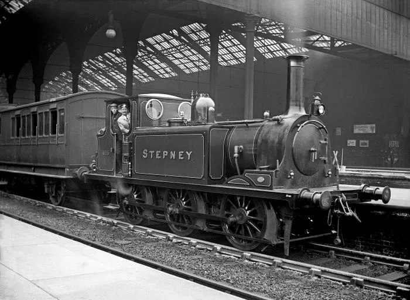

LMS Jinty

A Jinty-ket a London Midland Scottish railway építette elősször 1924-ben. Összesen 422 építettek. Az utolsót 1967-kor vonták ki a forgalomból a British Railways tulajdonában.
Lbscr Terrier
A Terrier-eket a London, Brighton and South Coast Railway építette elősször 1872-ben. Érdekes módon ezeket a kis mozdonyokat eredetileg expressz vonatok húzására találták ki. Az utolsót 1963-ban vonták ki a forgalomból a British Railways tulajdonában.
Lbscr E2

Az E2-seket a London, Brighton and South Coast Railway építette elősször 1913-ban. Ez a falyta mozdony nem más mint Thomas a gőzmozdony valódi megfelelője, de ellentétben Thomas-sal ezek a mozdonyok nem voltak nagyon hasznosak mert kevés szenet tudtak tárolni. Az utolsót 1963-ban vonták ki a forgalomból a British Railways tulajdonában.
Austerity tank

Az Austerity tank-ek az egyik legmodernebb mozdony ezen a listán amit a War Department építette elősször 1943-ban. Ezek a mozdonyok leginkább ipari munkát végeztek. Az utolsót 1984-ben vonták ki a forgalomból gyári tulajdonban.
GWR Pannier

A kockák mintha egy táblajátékot jelképeznének, ahol minden lépés fontos. A fehér ikon középen, egy stratégiai ponton, mintha az első lépésre várna. Mi történik, ha rá kattintunk? Az egész kép egy rejtélyes játék, amit még senki sem nyert meg. Az ikon lehet egy trükk, vagy egy igazi lehetőség. A szürke kockák, mint a sakkfigurák, mind egymást figyelik. A kérdés csak az, hogy mi következik. Képzeld el, ha egy új szintet lépnénk.
GWR 14XX

A GWR 14XX-eket ("Auto Tank-eket") elősször a Great Western Railway építette 1932-ben. Ezeket a mozdonyokat szárny vonalakra tervezték utasvonatok húzására. Az utolsót 1965-ben vonták ki a British Railways tulajdonában.